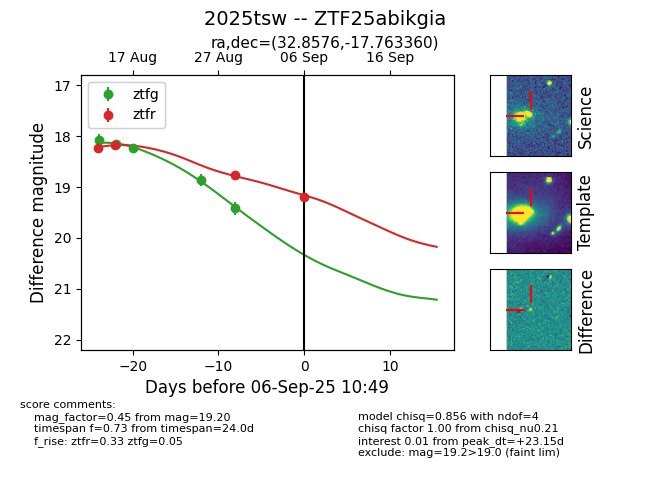

Target 2025tsw at 2025-08-22 15:07, see:
FINK: fink-portal.org/ZTF25abikgia
Lasair: lasair-ztf.lsst.ac.uk/objects/ZTF25abikgia
ALeRCE: alerce.online/object/ZTF25abikgia
TNS: wis-tns.org/object/2025tsw
YSE: ziggy.ucolick.org/yse/transient_detail/2025tsw
alt names
ZTF25abikgia (ztf,alerce)
2025tsw (tns,yse)
coordinates:
equatorial (ra, dec) = (32.8577,-17.76332)
galactic (l, b) = (190.1869,-69.31993)
photometry
last atlaso=19.01, ztfg=18.24, ztfr=18.18
1 atlaso, 3 ztfg, 2 ztfr detections
